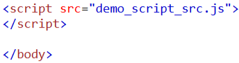
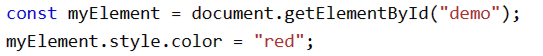

I am gey
Теперь настало время JavaScript!
Чтобы соединить js и html файл есть такие похожие два пути как с css, либо через написание в теге "body" тег "script" и дальше в нем js код, либо присоединить его, написав в теге "script"- "src="имя файла с расширением"".

Дальше же на ша задача обратиться к определенному элементу используя разные методы, такие как: "geElementById" или "querySelector".
После этого мы уже можем прописывать разные функции этому элементу, что допустим при нажатии происходит то-то то-то. 